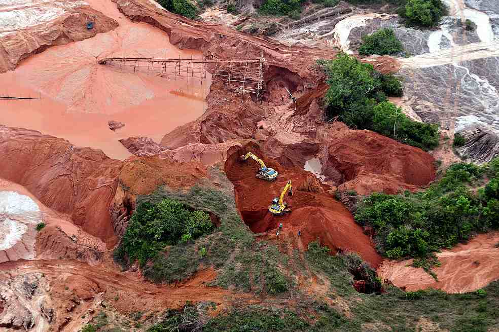

La Mineria ilegal de oro
Colombia es el segundo pais mas megadiverso del mundo , colombia creo el ministerio de ambiente y desarrrollo sostenible para garrantizarla conservacion el uso sostenible de los recursos naturales el 27 de septiembre del 2011, se invierten 371 mil millones 101 proyectos y 180 municipios , hay 35 nuevas estaciones que miden los niveles de los principales rios, y envian la informacion en vivo tambien cuenta con un monitoreo de desforestación que arroja cifras anuales, tambien la fiscalia general creo la unidad especial para delitos ambientales con su apoyo y el de la policia se desarrollan 16 opérativos de control a la mineria criminal en 8 departamentos .
Se incorporan 600 mil hectarias al sistema nacional de areas naturales,tambien se verifica la legalidad de la tierra (los recursos naturales no son algo que hemos heredado de nuesttros padres sino un tesoro que debemos cuidar para nuestros hijosMineria ilegal de oro cuando los conquistadores españoles llegaron por primera ves a colombia se envarcaraon por el rio magdalena en busca de el dorado saqueando pueblos , hoy 500 años mas tarde hay una nueva fiebre de oro miles y miles de minas ilegales han surgido en el rio magdalena . formando regiones con violencia. la mineria ilegal es alimentada por los altos precios de este metal , estas gigantescas minas formadas por mineros que no reciben un buen dinero por el cual trabajan , estas minas causan un impacto debastador en el medio ambiente , contaminando aguas y destruyendo habitats la mineria no es controlada por el gobierno aunque campañas del ministerio de desarrollo sostenible clausuran la mineria ya que aparte de dañar el medio ambiente son financiadas por paramilitares . Aunque estas minas ya no producen tanto oro como en el pasado debido a que se acaba, siguen trabajando para explotar su alto precio, los mineros seguiran su camino arrasando bosques en busaca de su pequeño el dorado.